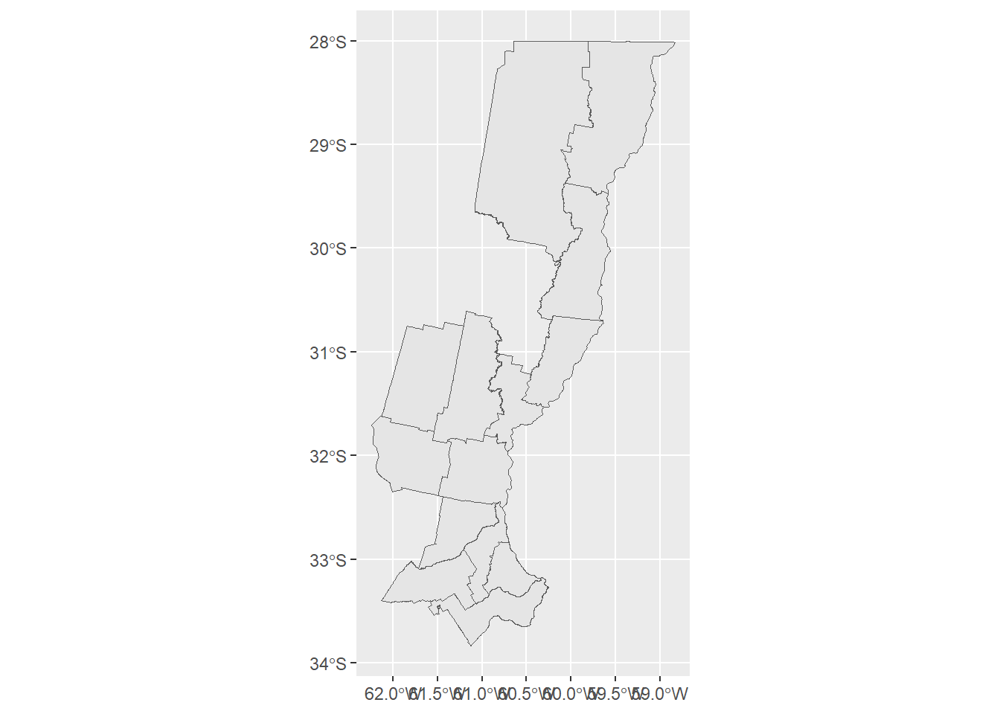

## Carga paquetes
pacman::p_load(
tmap,
sf,
rio,
janitor,
tidyverse
)Unión de datasets, mapas con ggplot2 y documentos RMarkdown
Este material es parte del curso Introducción a R tidyverse del Instituto Nacional de Epidemiología “Dr. Juan H. Jara” - ANLIS
Creado por Tamara Ricardo, licensed under CC BY-NC 4.0 


Unión de datasets
En el ejercicio práctico de una clase anterior aprendimos que podíamos unir dos bases por sus columnas en común mediante el comando left_join() del paquete dplyr, incluido dentro de tidyverse. En esta clase exploraremos más a fondo este comando y otras opciones que trae dplyr para unir datasets.
Comencemos por cargar los paquetes necesarios:
Veremos la utilidad de los paquetes sf y tmap más adelante en esta lección. Comencemos por cargar y limpiar la base con los datos de pacientes:
## Datos pacientes
pacientes_clean <- import("../raw/base_pacientes.xlsx") |>
# estandariza nombres de columnas
clean_names() |>
# renombra columnas manualmente
rename(depto_residencia = depto_r,
depto_muestra = depto_m,
provincia_residencia = provincia_resid) |>
# filtra datos de otras provincias
filter(!is.na(depto_residencia)) |>
# filtra registros sin edad y sexo
filter(!is.na(sexo) & !is.na(edad_diagnostico)) |>
# corrige nombre provincia
mutate(provincia_residencia = "Santa Fe") |>
# cambia etiquetas sexo
mutate(sexo = if_else(sexo == "M", "masculino", "femenino")) |>
# cambia formato de fechas
mutate(fecha_toma_muestra = dmy(fecha_toma_muestra)) |>
## Crea nuevas columnas
# año toma de muestra
mutate(anio_toma_muestra = year(fecha_toma_muestra)) |>
# semana epidemiológica
mutate(semana_toma_muestra = epiweek(fecha_toma_muestra)) |>
# edad en años
mutate(edad_anios = case_when(
tipo_edad_diagnostico=="MESES" ~ edad_diagnostico/12,
grupo_edad %in% c("<= 1 AÑO") ~ edad_diagnostico/12,
TRUE ~ edad_diagnostico)) |>
# ordena columnas
select(id_paciente, sexo, edad_anios, contains("resid"),
contains("muest"), internado) |>
# limpia duplicados
distinct()Ahora hacemos lo mismo con la base de los síntomas y la de los resultados de laboratorio:
## Datos síntomas
sintomas_clean <- import("../raw/base_sintomas.csv") |>
# estandariza nombres de columnas
clean_names() |>
# renombra manualmente columnas
rename(
sexo = genero,
fecha_toma_muestra = ftm,
nauseas_vomitos = nauseasyvomitos,
dolor_pantorrillas = dolor_de_pantorrillas,
estado_gripal = gripal
) |>
# corrige formato fechas
mutate(fecha_toma_muestra = dmy(fecha_toma_muestra)) |>
# cambia etiquetas sexo
mutate(sexo = if_else(sexo == "M", "masculino", "femenino")) |>
# corrige valores faltantes
mutate(across(where(is.character),
.fns = ~ na_if(.x, ""))) |>
# limpia duplicados
distinct()
## Datos laboratorio
laboratorio_clean <- import("../raw/base_lab.xlsx") |>
# estandariza nombre de columnas
clean_names() |>
# renombra manualmente columnas
rename(id_paciente = id_pte) |>
# corrige formato fechas
mutate(fecha_inicio_sintomas = convert_to_date(fecha_inicio_sintomas)) |>
## Crea nuevas variables
# año inicio síntomas
mutate(anio_inicio_sintomas = year(fecha_inicio_sintomas)) |>
# semana epidemiológica
mutate(semana_inicio_sintomas = epiweek(fecha_inicio_sintomas)) |>
# recategoriza resultado
mutate(resultado_cat = if_else(grepl("CONF", resultado),
"POS", "NEG"),
resultado_tipo = case_when(grepl("CONF|PROB", resultado) ~ 1,
TRUE ~ 0)) |>
# limpia duplicados
distinct()Comando left_join()
Retorna todas las filas de la base X (la base de la izquierda) y las filas de la base Y que coinciden con las de la base X. Si no hay coincidencia, las filas de la base X se mantienen y los valores de la base Y se llenan con NA.
En el caso de nuestros datos:
# Une bases
base_left <- left_join(pacientes_clean, sintomas_clean)Joining with `by = join_by(id_paciente, sexo, fecha_toma_muestra)`# Chequea número de filas y columnas
glimpse(pacientes_clean)Rows: 735
Columns: 10
$ id_paciente <chr> "895db5c1", "8a7605a7", "155d5cab", "e12b7021", "…
$ sexo <chr> "masculino", "femenino", "masculino", "masculino"…
$ edad_anios <dbl> 24.0, 26.0, 55.0, 51.0, 27.0, 61.0, 27.0, 62.0, 4…
$ depto_residencia <chr> "CONSTITUCION", "SAN JAVIER", "GENERAL OBLIGADO",…
$ provincia_residencia <chr> "Santa Fe", "Santa Fe", "Santa Fe", "Santa Fe", "…
$ depto_muestra <chr> "ROSARIO", "LA CAPITAL", "GENERAL OBLIGADO", "ROS…
$ fecha_toma_muestra <date> 2013-06-01, 2014-01-04, 2014-04-22, 2015-01-17, …
$ anio_toma_muestra <dbl> 2013, 2014, 2014, 2015, 2014, 2016, 2016, 2013, 2…
$ semana_toma_muestra <dbl> 22, 1, 17, 2, 24, 26, 34, 35, 49, 27, 17, 38, 11,…
$ internado <chr> "SI", "SI", "NO", "NO", "NO", "NO", "NO", "NO", "…glimpse(sintomas_clean)Rows: 750
Columns: 15
$ id_paciente <chr> "895db5c1", "8a7605a7", "155d5cab", "e12b7021", "63…
$ sexo <chr> "masculino", "femenino", "masculino", "masculino", …
$ fecha_toma_muestra <date> 2013-06-01, 2014-01-04, 2014-04-22, 2015-01-17, 20…
$ fiebre <chr> "Si", "No", "No", "No", "No", "Si", "Si", "Si", "Si…
$ cefalea <chr> "No", "Si", "No", "No", "No", "No", "No", "Si", "Si…
$ mialgia <chr> "No", "No", NA, "No", "No", "No", "No", "Si", "No",…
$ nauseas_vomitos <chr> "Si", "Si", "No", "No", "No", "Si", NA, "No", "No",…
$ diarrea <chr> "No", "No", "No", "No", "No", "No", "Si", "No", "No…
$ malestar <chr> "No", "No", "No", "No", "No", "No", "No", "No", "Si…
$ cansancio <chr> "No", "No", "No", "No", "No", "No", "No", "No", "No…
$ hemorragia <chr> "No", "No", "No", "No", "No", "No", "No", "No", "No…
$ ictericia <chr> "No", "No", "No", "No", "No", "No", "No", "No", "No…
$ dolor_pantorrillas <chr> "No", "No", "No", "No", "No", "No", "No", "No", "No…
$ estado_gripal <chr> "No", "No", "No", "No", "No", "No", "No", "No", "No…
$ mareos <chr> "No", "No", "No", "No", "No", "Si", "No", "No", "No…glimpse(base_left)Rows: 735
Columns: 22
$ id_paciente <chr> "895db5c1", "8a7605a7", "155d5cab", "e12b7021", "…
$ sexo <chr> "masculino", "femenino", "masculino", "masculino"…
$ edad_anios <dbl> 24.0, 26.0, 55.0, 51.0, 27.0, 61.0, 27.0, 62.0, 4…
$ depto_residencia <chr> "CONSTITUCION", "SAN JAVIER", "GENERAL OBLIGADO",…
$ provincia_residencia <chr> "Santa Fe", "Santa Fe", "Santa Fe", "Santa Fe", "…
$ depto_muestra <chr> "ROSARIO", "LA CAPITAL", "GENERAL OBLIGADO", "ROS…
$ fecha_toma_muestra <date> 2013-06-01, 2014-01-04, 2014-04-22, 2015-01-17, …
$ anio_toma_muestra <dbl> 2013, 2014, 2014, 2015, 2014, 2016, 2016, 2013, 2…
$ semana_toma_muestra <dbl> 22, 1, 17, 2, 24, 26, 34, 35, 49, 27, 17, 38, 11,…
$ internado <chr> "SI", "SI", "NO", "NO", "NO", "NO", "NO", "NO", "…
$ fiebre <chr> "Si", "No", "No", "No", "No", "Si", "Si", "Si", "…
$ cefalea <chr> "No", "Si", "No", "No", "No", "No", "No", "Si", "…
$ mialgia <chr> "No", "No", NA, "No", "No", "No", "No", "Si", "No…
$ nauseas_vomitos <chr> "Si", "Si", "No", "No", "No", "Si", NA, "No", "No…
$ diarrea <chr> "No", "No", "No", "No", "No", "No", "Si", "No", "…
$ malestar <chr> "No", "No", "No", "No", "No", "No", "No", "No", "…
$ cansancio <chr> "No", "No", "No", "No", "No", "No", "No", "No", "…
$ hemorragia <chr> "No", "No", "No", "No", "No", "No", "No", "No", "…
$ ictericia <chr> "No", "No", "No", "No", "No", "No", "No", "No", "…
$ dolor_pantorrillas <chr> "No", "No", "No", "No", "No", "No", "No", "No", "…
$ estado_gripal <chr> "No", "No", "No", "No", "No", "No", "No", "No", "…
$ mareos <chr> "No", "No", "No", "No", "No", "Si", "No", "No", "…Cuando unimos con left_join() se mantienen todas las filas de la base pacientes_clean y se descartan las filas de sintomas_clean que no coinciden con los valores de la columna en común id_paciente, sexo y fecha_toma_muestra.
También puedo especificar por cuales columnas en común quiero unir los datos y en este caso las columnas duplicadas se diferenciarán por los sufijos .x y .y. Esto es útil cuando suponemos que puede haber errores de carga en alguna de las bases que no permiten que el join se realice correctamente.
# Une bases
base_left <- left_join(pacientes_clean, sintomas_clean,
by = "id_paciente")
# Chequea número de filas y columnas base unida
glimpse(base_left)Rows: 735
Columns: 24
$ id_paciente <chr> "895db5c1", "8a7605a7", "155d5cab", "e12b7021", "…
$ sexo.x <chr> "masculino", "femenino", "masculino", "masculino"…
$ edad_anios <dbl> 24.0, 26.0, 55.0, 51.0, 27.0, 61.0, 27.0, 62.0, 4…
$ depto_residencia <chr> "CONSTITUCION", "SAN JAVIER", "GENERAL OBLIGADO",…
$ provincia_residencia <chr> "Santa Fe", "Santa Fe", "Santa Fe", "Santa Fe", "…
$ depto_muestra <chr> "ROSARIO", "LA CAPITAL", "GENERAL OBLIGADO", "ROS…
$ fecha_toma_muestra.x <date> 2013-06-01, 2014-01-04, 2014-04-22, 2015-01-17, …
$ anio_toma_muestra <dbl> 2013, 2014, 2014, 2015, 2014, 2016, 2016, 2013, 2…
$ semana_toma_muestra <dbl> 22, 1, 17, 2, 24, 26, 34, 35, 49, 27, 17, 38, 11,…
$ internado <chr> "SI", "SI", "NO", "NO", "NO", "NO", "NO", "NO", "…
$ sexo.y <chr> "masculino", "femenino", "masculino", "masculino"…
$ fecha_toma_muestra.y <date> 2013-06-01, 2014-01-04, 2014-04-22, 2015-01-17, …
$ fiebre <chr> "Si", "No", "No", "No", "No", "Si", "Si", "Si", "…
$ cefalea <chr> "No", "Si", "No", "No", "No", "No", "No", "Si", "…
$ mialgia <chr> "No", "No", NA, "No", "No", "No", "No", "Si", "No…
$ nauseas_vomitos <chr> "Si", "Si", "No", "No", "No", "Si", NA, "No", "No…
$ diarrea <chr> "No", "No", "No", "No", "No", "No", "Si", "No", "…
$ malestar <chr> "No", "No", "No", "No", "No", "No", "No", "No", "…
$ cansancio <chr> "No", "No", "No", "No", "No", "No", "No", "No", "…
$ hemorragia <chr> "No", "No", "No", "No", "No", "No", "No", "No", "…
$ ictericia <chr> "No", "No", "No", "No", "No", "No", "No", "No", "…
$ dolor_pantorrillas <chr> "No", "No", "No", "No", "No", "No", "No", "No", "…
$ estado_gripal <chr> "No", "No", "No", "No", "No", "No", "No", "No", "…
$ mareos <chr> "No", "No", "No", "No", "No", "Si", "No", "No", "…Comando right_join()
Retorna todas las filas de la base Y (la base de la derecha) y las filas de la base X que coinciden con las de la base Y. Si no hay coincidencia, las filas de la base Y se mantienen y los valores de la base X se llenan con NA.
## Une bases
base_right <- right_join(pacientes_clean, sintomas_clean)Joining with `by = join_by(id_paciente, sexo, fecha_toma_muestra)`# Chequea número de filas y columnas
glimpse(pacientes_clean)Rows: 735
Columns: 10
$ id_paciente <chr> "895db5c1", "8a7605a7", "155d5cab", "e12b7021", "…
$ sexo <chr> "masculino", "femenino", "masculino", "masculino"…
$ edad_anios <dbl> 24.0, 26.0, 55.0, 51.0, 27.0, 61.0, 27.0, 62.0, 4…
$ depto_residencia <chr> "CONSTITUCION", "SAN JAVIER", "GENERAL OBLIGADO",…
$ provincia_residencia <chr> "Santa Fe", "Santa Fe", "Santa Fe", "Santa Fe", "…
$ depto_muestra <chr> "ROSARIO", "LA CAPITAL", "GENERAL OBLIGADO", "ROS…
$ fecha_toma_muestra <date> 2013-06-01, 2014-01-04, 2014-04-22, 2015-01-17, …
$ anio_toma_muestra <dbl> 2013, 2014, 2014, 2015, 2014, 2016, 2016, 2013, 2…
$ semana_toma_muestra <dbl> 22, 1, 17, 2, 24, 26, 34, 35, 49, 27, 17, 38, 11,…
$ internado <chr> "SI", "SI", "NO", "NO", "NO", "NO", "NO", "NO", "…glimpse(sintomas_clean)Rows: 750
Columns: 15
$ id_paciente <chr> "895db5c1", "8a7605a7", "155d5cab", "e12b7021", "63…
$ sexo <chr> "masculino", "femenino", "masculino", "masculino", …
$ fecha_toma_muestra <date> 2013-06-01, 2014-01-04, 2014-04-22, 2015-01-17, 20…
$ fiebre <chr> "Si", "No", "No", "No", "No", "Si", "Si", "Si", "Si…
$ cefalea <chr> "No", "Si", "No", "No", "No", "No", "No", "Si", "Si…
$ mialgia <chr> "No", "No", NA, "No", "No", "No", "No", "Si", "No",…
$ nauseas_vomitos <chr> "Si", "Si", "No", "No", "No", "Si", NA, "No", "No",…
$ diarrea <chr> "No", "No", "No", "No", "No", "No", "Si", "No", "No…
$ malestar <chr> "No", "No", "No", "No", "No", "No", "No", "No", "Si…
$ cansancio <chr> "No", "No", "No", "No", "No", "No", "No", "No", "No…
$ hemorragia <chr> "No", "No", "No", "No", "No", "No", "No", "No", "No…
$ ictericia <chr> "No", "No", "No", "No", "No", "No", "No", "No", "No…
$ dolor_pantorrillas <chr> "No", "No", "No", "No", "No", "No", "No", "No", "No…
$ estado_gripal <chr> "No", "No", "No", "No", "No", "No", "No", "No", "No…
$ mareos <chr> "No", "No", "No", "No", "No", "Si", "No", "No", "No…glimpse(base_right)Rows: 750
Columns: 22
$ id_paciente <chr> "895db5c1", "8a7605a7", "155d5cab", "e12b7021", "…
$ sexo <chr> "masculino", "femenino", "masculino", "masculino"…
$ edad_anios <dbl> 24.0, 26.0, 55.0, 51.0, 27.0, 61.0, 27.0, 62.0, 4…
$ depto_residencia <chr> "CONSTITUCION", "SAN JAVIER", "GENERAL OBLIGADO",…
$ provincia_residencia <chr> "Santa Fe", "Santa Fe", "Santa Fe", "Santa Fe", "…
$ depto_muestra <chr> "ROSARIO", "LA CAPITAL", "GENERAL OBLIGADO", "ROS…
$ fecha_toma_muestra <date> 2013-06-01, 2014-01-04, 2014-04-22, 2015-01-17, …
$ anio_toma_muestra <dbl> 2013, 2014, 2014, 2015, 2014, 2016, 2016, 2013, 2…
$ semana_toma_muestra <dbl> 22, 1, 17, 2, 24, 26, 34, 35, 49, 27, 17, 38, 11,…
$ internado <chr> "SI", "SI", "NO", "NO", "NO", "NO", "NO", "NO", "…
$ fiebre <chr> "Si", "No", "No", "No", "No", "Si", "Si", "Si", "…
$ cefalea <chr> "No", "Si", "No", "No", "No", "No", "No", "Si", "…
$ mialgia <chr> "No", "No", NA, "No", "No", "No", "No", "Si", "No…
$ nauseas_vomitos <chr> "Si", "Si", "No", "No", "No", "Si", NA, "No", "No…
$ diarrea <chr> "No", "No", "No", "No", "No", "No", "Si", "No", "…
$ malestar <chr> "No", "No", "No", "No", "No", "No", "No", "No", "…
$ cansancio <chr> "No", "No", "No", "No", "No", "No", "No", "No", "…
$ hemorragia <chr> "No", "No", "No", "No", "No", "No", "No", "No", "…
$ ictericia <chr> "No", "No", "No", "No", "No", "No", "No", "No", "…
$ dolor_pantorrillas <chr> "No", "No", "No", "No", "No", "No", "No", "No", "…
$ estado_gripal <chr> "No", "No", "No", "No", "No", "No", "No", "No", "…
$ mareos <chr> "No", "No", "No", "No", "No", "Si", "No", "No", "…# Chequeo NAs
tabyl(base_right$depto_residencia) base_right$depto_residencia n percent valid_percent
9 DE JULIO 4 0.005333333 0.005442177
BELGRANO 2 0.002666667 0.002721088
CASEROS 20 0.026666667 0.027210884
CASTELLANOS 15 0.020000000 0.020408163
CONSTITUCION 16 0.021333333 0.021768707
GARAY 6 0.008000000 0.008163265
GENERAL LOPEZ 16 0.021333333 0.021768707
GENERAL OBLIGADO 53 0.070666667 0.072108844
IRIONDO 11 0.014666667 0.014965986
LA CAPITAL 189 0.252000000 0.257142857
LAS COLONIAS 13 0.017333333 0.017687075
ROSARIO 270 0.360000000 0.367346939
SAN CRISTOBAL 2 0.002666667 0.002721088
SAN JAVIER 40 0.053333333 0.054421769
SAN JERONIMO 11 0.014666667 0.014965986
SAN JUSTO 10 0.013333333 0.013605442
SAN LORENZO 17 0.022666667 0.023129252
SAN MARTIN 7 0.009333333 0.009523810
VERA 33 0.044000000 0.044897959
<NA> 15 0.020000000 NALa base nos muestra que hay 15 valores ausentes para depto_residencia, correspondientes a los registros que no pudieron unirse.
Comando inner_join()
Retorna todas las filas de ambas bases que tienen valores coincidentes en las columnas especificadas. Si una fila en la base X no tiene una coincidencia en la base Y, esa fila no se incluye en el resultado, y viceversa.
# Une bases
base_inner <- inner_join(pacientes_clean, sintomas_clean)Joining with `by = join_by(id_paciente, sexo, fecha_toma_muestra)`# Chequea número de filas y columnas
glimpse(base_inner)Rows: 735
Columns: 22
$ id_paciente <chr> "895db5c1", "8a7605a7", "155d5cab", "e12b7021", "…
$ sexo <chr> "masculino", "femenino", "masculino", "masculino"…
$ edad_anios <dbl> 24.0, 26.0, 55.0, 51.0, 27.0, 61.0, 27.0, 62.0, 4…
$ depto_residencia <chr> "CONSTITUCION", "SAN JAVIER", "GENERAL OBLIGADO",…
$ provincia_residencia <chr> "Santa Fe", "Santa Fe", "Santa Fe", "Santa Fe", "…
$ depto_muestra <chr> "ROSARIO", "LA CAPITAL", "GENERAL OBLIGADO", "ROS…
$ fecha_toma_muestra <date> 2013-06-01, 2014-01-04, 2014-04-22, 2015-01-17, …
$ anio_toma_muestra <dbl> 2013, 2014, 2014, 2015, 2014, 2016, 2016, 2013, 2…
$ semana_toma_muestra <dbl> 22, 1, 17, 2, 24, 26, 34, 35, 49, 27, 17, 38, 11,…
$ internado <chr> "SI", "SI", "NO", "NO", "NO", "NO", "NO", "NO", "…
$ fiebre <chr> "Si", "No", "No", "No", "No", "Si", "Si", "Si", "…
$ cefalea <chr> "No", "Si", "No", "No", "No", "No", "No", "Si", "…
$ mialgia <chr> "No", "No", NA, "No", "No", "No", "No", "Si", "No…
$ nauseas_vomitos <chr> "Si", "Si", "No", "No", "No", "Si", NA, "No", "No…
$ diarrea <chr> "No", "No", "No", "No", "No", "No", "Si", "No", "…
$ malestar <chr> "No", "No", "No", "No", "No", "No", "No", "No", "…
$ cansancio <chr> "No", "No", "No", "No", "No", "No", "No", "No", "…
$ hemorragia <chr> "No", "No", "No", "No", "No", "No", "No", "No", "…
$ ictericia <chr> "No", "No", "No", "No", "No", "No", "No", "No", "…
$ dolor_pantorrillas <chr> "No", "No", "No", "No", "No", "No", "No", "No", "…
$ estado_gripal <chr> "No", "No", "No", "No", "No", "No", "No", "No", "…
$ mareos <chr> "No", "No", "No", "No", "No", "Si", "No", "No", "…Comando full_join()
Retorna todas las filas de ambas bases, uniendo las que coinciden y llenando con NA donde no hay coincidencias.
# Une bases
base_full <- full_join(pacientes_clean, sintomas_clean)Joining with `by = join_by(id_paciente, sexo, fecha_toma_muestra)`# Chequea número de filas y columnas
glimpse(base_full)Rows: 750
Columns: 22
$ id_paciente <chr> "895db5c1", "8a7605a7", "155d5cab", "e12b7021", "…
$ sexo <chr> "masculino", "femenino", "masculino", "masculino"…
$ edad_anios <dbl> 24.0, 26.0, 55.0, 51.0, 27.0, 61.0, 27.0, 62.0, 4…
$ depto_residencia <chr> "CONSTITUCION", "SAN JAVIER", "GENERAL OBLIGADO",…
$ provincia_residencia <chr> "Santa Fe", "Santa Fe", "Santa Fe", "Santa Fe", "…
$ depto_muestra <chr> "ROSARIO", "LA CAPITAL", "GENERAL OBLIGADO", "ROS…
$ fecha_toma_muestra <date> 2013-06-01, 2014-01-04, 2014-04-22, 2015-01-17, …
$ anio_toma_muestra <dbl> 2013, 2014, 2014, 2015, 2014, 2016, 2016, 2013, 2…
$ semana_toma_muestra <dbl> 22, 1, 17, 2, 24, 26, 34, 35, 49, 27, 17, 38, 11,…
$ internado <chr> "SI", "SI", "NO", "NO", "NO", "NO", "NO", "NO", "…
$ fiebre <chr> "Si", "No", "No", "No", "No", "Si", "Si", "Si", "…
$ cefalea <chr> "No", "Si", "No", "No", "No", "No", "No", "Si", "…
$ mialgia <chr> "No", "No", NA, "No", "No", "No", "No", "Si", "No…
$ nauseas_vomitos <chr> "Si", "Si", "No", "No", "No", "Si", NA, "No", "No…
$ diarrea <chr> "No", "No", "No", "No", "No", "No", "Si", "No", "…
$ malestar <chr> "No", "No", "No", "No", "No", "No", "No", "No", "…
$ cansancio <chr> "No", "No", "No", "No", "No", "No", "No", "No", "…
$ hemorragia <chr> "No", "No", "No", "No", "No", "No", "No", "No", "…
$ ictericia <chr> "No", "No", "No", "No", "No", "No", "No", "No", "…
$ dolor_pantorrillas <chr> "No", "No", "No", "No", "No", "No", "No", "No", "…
$ estado_gripal <chr> "No", "No", "No", "No", "No", "No", "No", "No", "…
$ mareos <chr> "No", "No", "No", "No", "No", "Si", "No", "No", "…Comando semi_join()
Retorna todas las filas de la base X que tienen una coincidencia en la base Y. No agrega columnas de la base Y, solo filtra las filas de la base X.
# Une bases
base_semi <- semi_join(pacientes_clean, sintomas_clean)Joining with `by = join_by(id_paciente, sexo, fecha_toma_muestra)`# Chequea número de filas y columnas
glimpse(base_full)Rows: 750
Columns: 22
$ id_paciente <chr> "895db5c1", "8a7605a7", "155d5cab", "e12b7021", "…
$ sexo <chr> "masculino", "femenino", "masculino", "masculino"…
$ edad_anios <dbl> 24.0, 26.0, 55.0, 51.0, 27.0, 61.0, 27.0, 62.0, 4…
$ depto_residencia <chr> "CONSTITUCION", "SAN JAVIER", "GENERAL OBLIGADO",…
$ provincia_residencia <chr> "Santa Fe", "Santa Fe", "Santa Fe", "Santa Fe", "…
$ depto_muestra <chr> "ROSARIO", "LA CAPITAL", "GENERAL OBLIGADO", "ROS…
$ fecha_toma_muestra <date> 2013-06-01, 2014-01-04, 2014-04-22, 2015-01-17, …
$ anio_toma_muestra <dbl> 2013, 2014, 2014, 2015, 2014, 2016, 2016, 2013, 2…
$ semana_toma_muestra <dbl> 22, 1, 17, 2, 24, 26, 34, 35, 49, 27, 17, 38, 11,…
$ internado <chr> "SI", "SI", "NO", "NO", "NO", "NO", "NO", "NO", "…
$ fiebre <chr> "Si", "No", "No", "No", "No", "Si", "Si", "Si", "…
$ cefalea <chr> "No", "Si", "No", "No", "No", "No", "No", "Si", "…
$ mialgia <chr> "No", "No", NA, "No", "No", "No", "No", "Si", "No…
$ nauseas_vomitos <chr> "Si", "Si", "No", "No", "No", "Si", NA, "No", "No…
$ diarrea <chr> "No", "No", "No", "No", "No", "No", "Si", "No", "…
$ malestar <chr> "No", "No", "No", "No", "No", "No", "No", "No", "…
$ cansancio <chr> "No", "No", "No", "No", "No", "No", "No", "No", "…
$ hemorragia <chr> "No", "No", "No", "No", "No", "No", "No", "No", "…
$ ictericia <chr> "No", "No", "No", "No", "No", "No", "No", "No", "…
$ dolor_pantorrillas <chr> "No", "No", "No", "No", "No", "No", "No", "No", "…
$ estado_gripal <chr> "No", "No", "No", "No", "No", "No", "No", "No", "…
$ mareos <chr> "No", "No", "No", "No", "No", "Si", "No", "No", "…Comando anti_join()
Retorna todas las filas de la base X que no tienen una coincidencia en la base Y.
# Une bases
base_anti <- anti_join(pacientes_clean, sintomas_clean)Joining with `by = join_by(id_paciente, sexo, fecha_toma_muestra)`# Chequea número de filas y columnas
glimpse(base_anti)Rows: 0
Columns: 10
$ id_paciente <chr>
$ sexo <chr>
$ edad_anios <dbl>
$ depto_residencia <chr>
$ provincia_residencia <chr>
$ depto_muestra <chr>
$ fecha_toma_muestra <date>
$ anio_toma_muestra <dbl>
$ semana_toma_muestra <dbl>
$ internado <chr> Comando bind_rows()
Combina dos o más datasets añadiendo sus filas. Las columnas de los data frames deben tener los mismos nombres, o se crearán columnas nuevas si alguna columna no existe en alguno de los data frames.
# Une bases
base_bind_row <- bind_rows(pacientes_clean, sintomas_clean)
# Chequea número de filas y columnas
glimpse(base_bind_row)Rows: 1,485
Columns: 22
$ id_paciente <chr> "895db5c1", "8a7605a7", "155d5cab", "e12b7021", "…
$ sexo <chr> "masculino", "femenino", "masculino", "masculino"…
$ edad_anios <dbl> 24.0, 26.0, 55.0, 51.0, 27.0, 61.0, 27.0, 62.0, 4…
$ depto_residencia <chr> "CONSTITUCION", "SAN JAVIER", "GENERAL OBLIGADO",…
$ provincia_residencia <chr> "Santa Fe", "Santa Fe", "Santa Fe", "Santa Fe", "…
$ depto_muestra <chr> "ROSARIO", "LA CAPITAL", "GENERAL OBLIGADO", "ROS…
$ fecha_toma_muestra <date> 2013-06-01, 2014-01-04, 2014-04-22, 2015-01-17, …
$ anio_toma_muestra <dbl> 2013, 2014, 2014, 2015, 2014, 2016, 2016, 2013, 2…
$ semana_toma_muestra <dbl> 22, 1, 17, 2, 24, 26, 34, 35, 49, 27, 17, 38, 11,…
$ internado <chr> "SI", "SI", "NO", "NO", "NO", "NO", "NO", "NO", "…
$ fiebre <chr> NA, NA, NA, NA, NA, NA, NA, NA, NA, NA, NA, NA, N…
$ cefalea <chr> NA, NA, NA, NA, NA, NA, NA, NA, NA, NA, NA, NA, N…
$ mialgia <chr> NA, NA, NA, NA, NA, NA, NA, NA, NA, NA, NA, NA, N…
$ nauseas_vomitos <chr> NA, NA, NA, NA, NA, NA, NA, NA, NA, NA, NA, NA, N…
$ diarrea <chr> NA, NA, NA, NA, NA, NA, NA, NA, NA, NA, NA, NA, N…
$ malestar <chr> NA, NA, NA, NA, NA, NA, NA, NA, NA, NA, NA, NA, N…
$ cansancio <chr> NA, NA, NA, NA, NA, NA, NA, NA, NA, NA, NA, NA, N…
$ hemorragia <chr> NA, NA, NA, NA, NA, NA, NA, NA, NA, NA, NA, NA, N…
$ ictericia <chr> NA, NA, NA, NA, NA, NA, NA, NA, NA, NA, NA, NA, N…
$ dolor_pantorrillas <chr> NA, NA, NA, NA, NA, NA, NA, NA, NA, NA, NA, NA, N…
$ estado_gripal <chr> NA, NA, NA, NA, NA, NA, NA, NA, NA, NA, NA, NA, N…
$ mareos <chr> NA, NA, NA, NA, NA, NA, NA, NA, NA, NA, NA, NA, N…Comando bind_cols()
Combina dos o más datasets añadiendo sus columnas. Las filas deben ser de la misma longitud; de lo contrario, se completarán con NA.
# Une bases
base_bind_col <- bind_cols(pacientes_clean, sintomas_clean)Error in `bind_cols()`:
! Can't recycle `..1` (size 735) to match `..2` (size 750).# Chequea número de filas y columnas
glimpse(base_bind_col)Error in eval(expr, envir, enclos): object 'base_bind_col' not foundEn este caso, vamos a obtener un mensaje de error al intentar unir los datasets ya que el número de filas en la base X es diferente al número de filas en la base Y
Utilidades de la unión de datasets
Los comandos xxx_join() se utilizan para unir dos datasets basándose en una o más columnas comunes. Son útiles para:
Unir datos relacionados: unir dos datasets con información relacionada en uno solo.
Análisis combinado: uniendo datasets con diferentes aspectos del mismo conjunto de datos.
Enriquecimiento de datos: se puede enriquecer un conjunto de datos con información adicional de otro dataset.
Filtrado específico: filtrar datos usando
semi_joinoanti_joinen base a coincidencias o la falta de ellas en otro dataset.
Por otro lado, los comandos bind_xxx() se utilizan para añadir filas o columnas a un dataset, siendo especialmente útiles para:
Agregar nuevas observaciones: se pueden combinar varios datasets que representan diferentes observaciones de la misma estructura (por ejemplo, datos de diferentes meses o años).
Concatenación de resultados: cuando se quieren analizar juntos múltiples resultados de diferentes cálculos o simulaciones.
Agregar nuevas variables: cuando se tienen bases que contienen diferentes variables (columnas) para las mismas observaciones (filas), puedes combinarlas en una sola.
Construcción de dataframes complejos: cuando se cuenta diferentes componentes de datos y queremos combinarlos en una sola estructura para análisis más completo
En la vida real, los comandos de unión que más se utilizan son left_join() y bind_rows(), pero en algunos casos inner_join() y anti_join() resultan de utilidad para explorar los datos.
Terminemos de unir las bases de nuestra práctica (recuerden que solo pueden unirse dos bases por vez al usar los joins):
# Une bases
base_clean <- left_join(pacientes_clean, sintomas_clean) |>
# añado base resultados
left_join(laboratorio_clean)Joining with `by = join_by(id_paciente, sexo, fecha_toma_muestra)`
Joining with `by = join_by(id_paciente)`# Guardo base limpia
export(base_clean, file = "../clean/base_clean.xlsx")
# Limpio working environment
rm(list = ls())Mapas en ggplot2
Lo que vimos anteriormente sobre unión de datasets nos servirá para el siguiente paso: generar mapas con ggplot2 y sus paquetes accesorios sf y tmap.
Mapas estáticos con sf
El paquete sf (Simple Features for R) está diseñado para manejar datos vectoriales espaciales de manera eficiente y fácil de usar, y sigue el estándar Simple Features Access (SFA) definido por el Open Geospatial Consortium (OGC). Su capacidad para manejar múltiples formatos de datos espaciales, y sus funciones para realizar análisis y visualización geoespacial lo hacen invaluable para investigadores y profesionales que trabajan con datos espaciales en campos como geografía, ecología, epidemiología, etc.
Veamos como generar un mapa sencillo en ggplot2 usando la base de datos que limpiamos anteriormente:
# Carga base limpia pacientes
base_clean <- import("../clean/base_clean.xlsx")Ahora procederemos a cargar una capa geográfica (GIS) que contiene información climática de los distintos departamentos de la provincia de Santa Fe, obtenida de la Plataforma Abierta de Datos Espaciales de la Argentina (POBLACIONES) y podemos descargarla en la carpeta datos_clean subida a la página del curso. Las capas GIS se componen de cinco archivos, siendo el principal, que utilizaremos para leer la capa el que tiene extensión .shp, mientras que el resto contiene información importante sobre la proyección geográfica y la correcta lectura de la capa. El comando para leer capas geográficas se llama st_read y es parte del paquete sf.
# Carga capa GIS
deptos_sf <- st_read("../clean/Elevación, precipitaciones y temperaturas medias por departamento - Santa Fe.shp")Reading layer `Elevación, precipitaciones y temperaturas medias por departamento - Santa Fe' from data source `G:\Mi unidad\Docencia\2024_Introduccion_R\clean\Elevación, precipitaciones y temperaturas medias por departamento - Santa Fe.shp'
using driver `ESRI Shapefile'
Simple feature collection with 19 features and 52 fields
Geometry type: MULTIPOLYGON
Dimension: XY
Bounding box: xmin: -62.88963 ymin: -34.38696 xmax: -58.83213 ymax: -27.99783
Geodetic CRS: WGS 84# Explora capa
glimpse(deptos_sf)Rows: 19
Columns: 53
$ COD_DPTO <chr> "82007", "82014", "82021", "82028", "82035", "82042", "8204…
$ ALTITUD_MA <dbl> 165.74, 127.00, 160.25, 114.00, 68.84, 173.54, 94.07, 139.5…
$ ALTITUD_MI <dbl> 13.63, 9.07, 24.45, -8.98, -53.70, 40.74, -5.66, -40.13, -6…
$ ALTITUD_DE <dbl> 152.11, 117.92, 135.79, 122.98, 122.54, 132.79, 99.74, 179.…
$ CATEGORIA_ <dbl> 5, 4, 4, 3, 1, 5, 2, 3, 2, 2, 3, 2, 3, 2, 2, 2, 3, 4, 3
$ AREA_KM2 <dbl> 2449.371, 3474.535, 6726.217, 3385.906, 4008.283, 11368.801…
$ M1_PRECIPI <dbl> 109.7, 104.4, 113.3, 96.3, 122.0, 100.2, 131.3, 110.5, 119.…
$ M2_PRECIPI <dbl> 89.4, 88.6, 102.7, 93.5, 101.3, 103.8, 122.8, 86.5, 92.7, 9…
$ M3_PRECIPI <dbl> 139.4, 134.8, 153.8, 135.5, 161.9, 123.7, 175.1, 146.0, 164…
$ M4_PRECIPI <dbl> 74.0, 75.2, 76.9, 84.2, 91.2, 77.4, 143.1, 76.5, 93.0, 84.2…
$ M5_PRECIPI <dbl> 46.1, 47.5, 48.9, 57.9, 64.2, 49.7, 68.7, 47.6, 53.7, 52.0,…
$ M6_PRECIPI <dbl> 19.2, 24.1, 19.1, 31.1, 38.4, 24.8, 48.3, 27.2, 35.4, 28.2,…
$ M7_PRECIPI <dbl> 27.3, 30.9, 19.6, 37.0, 33.6, 31.7, 37.3, 27.8, 30.1, 25.9,…
$ M8_PRECIPI <dbl> 26.6, 28.8, 21.7, 37.2, 38.6, 26.7, 37.0, 28.1, 32.8, 29.8,…
$ M9_PRECIPI <dbl> 64.2, 66.9, 53.2, 70.2, 77.1, 64.8, 81.7, 64.8, 67.8, 63.6,…
$ M10_PRECIP <dbl> 84.4, 93.5, 79.9, 93.5, 98.6, 97.7, 112.4, 87.6, 90.3, 86.2…
$ M11_PRECIP <dbl> 93.0, 86.0, 100.3, 88.9, 108.7, 87.5, 140.8, 94.3, 102.3, 1…
$ M12_PRECIP <dbl> 102.2, 101.2, 120.4, 107.0, 136.1, 109.6, 126.0, 105.6, 129…
$ PRECIPITAC <dbl> 931.9, 947.3, 975.5, 990.4, 1136.2, 955.9, 1301.1, 963.1, 1…
$ M1_TEMPERA <dbl> 25.6, 25.2, 25.9, 24.9, 26.1, 24.2, 26.2, 25.6, 26.1, 26.0,…
$ M2_TEMPERA <dbl> 24.2, 23.8, 24.6, 23.5, 24.8, 23.0, 25.0, 24.2, 24.8, 24.7,…
$ M3_TEMPERA <dbl> 21.9, 21.4, 22.6, 21.2, 22.8, 20.6, 23.3, 21.9, 22.7, 22.7,…
$ M4_TEMPERA <dbl> 17.9, 17.4, 18.9, 17.1, 19.1, 16.5, 19.9, 18.0, 19.0, 19.0,…
$ M5_TEMPERA <dbl> 14.6, 14.0, 15.7, 13.7, 16.0, 13.1, 17.0, 14.6, 15.8, 15.8,…
$ M6_TEMPERA <dbl> 11.2, 10.7, 12.4, 10.4, 12.7, 9.8, 14.0, 11.2, 12.5, 12.5, …
$ M7_TEMPERA <dbl> 10.8, 10.2, 12.0, 9.9, 12.4, 9.3, 13.7, 10.8, 12.2, 12.2, 1…
$ ALTITUD_ME <dbl> 104.23, 92.56, 94.56, 71.34, 19.23, 107.93, 49.07, 67.77, 2…
$ M8_TEMPERA <dbl> 12.6, 12.0, 13.8, 11.7, 14.2, 11.1, 15.4, 12.6, 13.9, 13.9,…
$ M9_TEMPERA <dbl> 14.9, 14.4, 16.2, 14.0, 16.4, 13.5, 17.7, 14.9, 16.2, 16.2,…
$ M10_TEMPER <dbl> 18.5, 17.9, 19.7, 17.5, 19.9, 16.8, 21.0, 18.5, 19.7, 19.8,…
$ M11_TEMPER <dbl> 21.6, 21.0, 22.5, 20.7, 22.6, 20.0, 23.3, 21.6, 22.5, 22.5,…
$ M12_TEMPER <dbl> 24.4, 23.9, 24.9, 23.6, 25.0, 23.0, 25.3, 24.4, 25.0, 25.0,…
$ TEMPERATUR <dbl> 18.2, 17.7, 19.1, 17.4, 19.3, 16.7, 20.1, 18.2, 19.2, 19.2,…
$ CATEGORI_1 <dbl> 9, 9, 9, 8, 9, 8, 9, 9, 9, 9, 9, 9, 9, 9, 9, 9, 9, 9, 9
$ CATEGORI_2 <dbl> 6, 5, 6, 5, 6, 5, 6, 6, 6, 6, 7, 6, 6, 6, 6, 6, 6, 6, 6
$ CATEGORI_3 <dbl> 3, 3, 3, 2, 3, 2, 4, 3, 3, 3, 4, 3, 4, 4, 3, 4, 3, 3, 4
$ CATEGORI_4 <dbl> 6, 6, 6, 6, 6, 5, 7, 6, 6, 6, 7, 6, 7, 7, 6, 7, 6, 6, 7
$ CATEGORI_5 <dbl> 6, 6, 6, 5, 6, 5, 7, 6, 6, 6, 7, 6, 6, 6, 6, 6, 6, 6, 7
$ CATEGORI_6 <dbl> 6, 6, 7, 6, 7, 6, 7, 7, 7, 7, 7, 6, 7, 7, 6, 7, 6, 7, 7
$ CATEGORI_7 <dbl> 5, 5, 5, 5, 6, 5, 7, 5, 6, 5, 5, 5, 5, 6, 5, 5, 5, 5, 7
$ CATEGORI_8 <dbl> 2, 3, 2, 3, 3, 3, 3, 2, 3, 2, 2, 3, 2, 3, 2, 3, 2, 2, 2
$ CATEGORI_9 <dbl> 5, 6, 5, 6, 6, 6, 7, 5, 6, 5, 5, 5, 5, 6, 6, 6, 5, 5, 6
$ CATEGORI10 <dbl> 5, 5, 5, 5, 8, 5, 9, 5, 7, 6, 5, 5, 6, 8, 6, 8, 5, 5, 8
$ IDPROV <chr> "82", "82", "82", "82", "82", "82", "82", "82", "82", "82",…
$ PROV <chr> "Santa Fe", "Santa Fe", "Santa Fe", "Santa Fe", "Santa Fe",…
$ IDDPTO <chr> "82007", "82014", "82021", "82028", "82035", "82042", "8204…
$ DPTO <chr> "Belgrano", "Caseros", "Castellanos", "Constitución", "Gara…
$ DEPARTAMEN <dbl> 44788, 82100, 178092, 86910, 20890, 191024, 176410, 66675, …
$ DEPARTAM_1 <dbl> 14481, 27951, 56560, 27693, 5860, 64397, 49969, 21896, 1651…
$ DEPARTAM_2 <dbl> -32.61047, -33.22145, -31.23135, -33.48451, -31.05555, -33.…
$ DEPARTAM_3 <dbl> -61.70471, -61.53297, -61.65707, -60.88070, -60.12933, -61.…
$ DEPARTAM_4 <dbl> 2449.387, 3474.580, 6726.269, 3386.174, 4008.375, 11368.839…
$ geometry <MULTIPOLYGON [°]> MULTIPOLYGON (((-61.47292 -..., MULTIPOLYGON (((-61.17635 -…Ahora procederemos a limpiar un poco la capa geográfica usando las funciones de tidyverse. Según el diccionario de datos adjunto en la carpeta, nos interesa mantener las variables dpto, categoria_altura, precip_anual y temp_anual_media.
# Limpia dataset
deptos_sf <- deptos_sf |>
# estandariza nombres columnas
clean_names() |>
# cambia manualmente nombres columnas
rename(
altura_cat = categoria,
precip_anual = precipitac,
temp_anual_media = temperatur) |>
# cambia a mayúsculas nombres deptos
mutate(dpto = toupper(dpto)) |>
# descarta columnas innecesarias
select(dpto, altura_cat, precip_anual, temp_anual_media)Uniremos la base de los pacientes con la capa GIS usando left_join():
# Une base y datos GIS
base_gis <- left_join(base_clean, deptos_sf,
by = c("depto_residencia" = "dpto"))
# Explora NAs nuevas columnas
tabyl(base_gis$altura_cat) base_gis$altura_cat n percent valid_percent
1 6 0.008163265 0.008784773
2 575 0.782312925 0.841874085
3 65 0.088435374 0.095168375
4 35 0.047619048 0.051244510
5 2 0.002721088 0.002928258
NA 52 0.070748299 NAObservamos que 52 filas tienen valores ausentes para la columna altura_cat, esto posiblemente se deba a que los nombres de los departamentos en la capa GIS contengan acentos o caracteres especiales, para estandarizarlos usaremos el comando stri_trans_general() del paquete stringi:
deptos_sf <- deptos_sf |>
mutate(dpto = stringi::stri_trans_general(dpto, id = "Latin-ASCII"))Ahora volveremos a correr la unión de bases:
# Une base y datos GIS
base_gis <- left_join(base_clean, deptos_sf,
by = c("depto_residencia" = "dpto"))
# Explora NAs nuevas columnas
tabyl(base_gis$altura_cat) base_gis$altura_cat n percent
1 6 0.008163265
2 586 0.797278912
3 83 0.112925170
4 42 0.057142857
5 18 0.024489796No quedan columnas con NAs, así que podemos proceder a convertir la base en objeto espacial con el comando st_as_sf() y luego generar una tabla con los casos de leptospirosis por departamento:
# Estructura base original
class(base_gis)[1] "data.frame"## Crea base casos por depto
casos_depto_gis <- base_gis |>
# transforma a objeto espacial
st_as_sf() |>
# tabla de casos por departamento
count(depto_residencia, altura_cat, precip_anual, temp_anual_media,
resultado_tipo) |>
# filtra casos descartados
filter(resultado_tipo == 1)
# Estructura de la nueva base
class(casos_depto_gis)[1] "sf" "data.frame"glimpse(casos_depto_gis)Rows: 14
Columns: 7
$ depto_residencia <chr> "CASEROS", "CASTELLANOS", "CONSTITUCION", "GARAY", "G…
$ altura_cat <dbl> 4, 4, 3, 1, 2, 3, 2, 2, 2, 2, 2, 3, 4, 3
$ precip_anual <dbl> 947.3, 975.5, 990.4, 1136.2, 1301.1, 963.1, 1084.3, 1…
$ temp_anual_media <dbl> 17.7, 19.1, 17.4, 19.3, 20.1, 18.2, 19.2, 19.2, 17.9,…
$ resultado_tipo <dbl> 1, 1, 1, 1, 1, 1, 1, 1, 1, 1, 1, 1, 1, 1
$ n <int> 3, 1, 4, 1, 9, 3, 27, 1, 43, 9, 3, 1, 1, 9
$ geometry <POLYGON [°]> POLYGON ((-61.18231 -32.935..., POLYGON ((-61.22809 -…Podemos ver que la nueva base tiene estructura "sf" y "data.frame" y que se mantiene la columna geometry a pesar de no haberla incluido en el count(). Esto se debe a que geometry contiene la información geográfica necesaria para graficar la capa como mapa.
Procederemos a crear nuestro primer mapa usando ggplot2 y el comando geom_sf():
## Genera mapa
ggplot() +
geom_sf(data = casos_depto_gis)
Vemos que la bota de la provincia de Santa Fe aparece cortada, ya que no se registraron casos de leptospirosis en todos los departamentos durante el periodo de estudio. Vamos a asignarle una escala de color dinámica según el número de casos y a colocar el mapa de todos los departamentos como capa base. A diferencia de lo que vimos anteriormente en ggplot2, cuando trabajamos con más de una capa geográfica conviene llamar el argumento data = dentro de cada geoma.
## Genera mapa
ggplot() +
# Añade capa base departamentos
geom_sf(data = deptos_sf) +
# Añade casos por departamento
geom_sf(data = casos_depto_gis, mapping = aes(fill = n)) +
# cambia escala color colorblind-friendly
scale_fill_viridis_c(alpha = .75) +
# Tema claro
theme_minimal()
El gráfico obtenido se conoce como mapa coroplético y muestra áreas delimitadas en distintos colores para representar variaciones espaciales de una variable específica. Es particularmente útil para visualizar datos geoespaciales como densidad poblacional, tasas de una enfermedad, temperaturas y precipitaciones medias, etc.
Actividad:
Siguiendo el ejemplo anterior, generen mapas coropléticos para el resto de las variables de casos_depto_gis, observen detenidamente los mapas para detectar si existe algún tipo de patrón climático asociado a los casos de leptospirosis. Pueden usar facets para colocar los mapas uno al lado del otro.
Mapas estáticos y dinámicos con tmap
Finalmente, veremos el paquete tmap, que expande las funciones de sf y ggplot2 permitiendo generar mapas dinámicos con la opción tmap_mode("view"). Un pequeño ejemplo a partir del mapa generado anteriormente:
# Modo dinámico
tmap_mode("view")tmap mode set to interactive viewing# Genero mapa
mapa_dinamico <-
# Mapa base
tm_basemap(server = "OpenStreetMap") +
# Capa departamentos
tm_shape(shp = deptos_sf) +
tm_borders() +
# Capa casos por depto
tm_shape(shp = casos_depto_gis) +
tm_polygons(col = "n")El comando tm_basemap() crea un mapa base usando capas de OpenStreetMap u otros servidores, por otro lado tm_shape() llama a la capa geográfica que queremos graficar y los comandos tm_borders(), tm_fill(), tm_polygons(), indican de que forma quiero que aparezcan (solo bordes, solo relleno, bordes y relleno). Por otro lado, el argumento col = nos permite especificar si el color de relleno será estático o dinámico de acuerdo a los valores de alguna variable o variables de la capa. Existe gran diversidad de opciones de configuración, así como comandos para datos geográficos de puntos, que les invito a que exploren de acuerdo a sus necesidades.
Actividad
Al mapa anterior, añadirle las demás capas de la base mediante el argumento col = c("var1", "var2", ...,"varn") y ver que ocurre. Pueden jugar con la transparencia de las capas y usar paletas personalizadas con los paquetes RColorBrewer y scico. También pueden ocultar y mostrar capas en la vista interactiva usando el argumento group = .
Documentos con R Markdown
RMarkdown es una extensión del lenguaje Markdown que se utiliza para formatear texto y permite integrar código de R directamente en un documento que puede contener texto, gráficos y otros elementos. Los documentos de RMarkdown se componen de tres partes:
- Cabecera YAML: sección al comienzo del documento que contiene metadatos sobre el documento como ser título, autor, fecha y formato de salida. Se delimita por triple guión medio
---.
Bloques de código: secciones de código delimitadas por triple tilde o backticks (
```{r}) donde se escribe el código R.# Código R summary(mtcars)Texto: texto en formato Markdown que describe y explica los resultados del código, mezclado con los bloques de código.
Si bien originalmente estaba contemplado aprender a generar documentos de Markdown, la complejidad del mismo excede el contenido del curso. Por otro lado, POSIT, los creadores de RStudio y RMarkdown están trabajando en reemplazarlo por Quarto, otro lenguaje de marcas mucho más versátil y amigable con el usuario.
Quienes tengan interés en Quarto, pueden acceder a las clases del taller que dicta Christian Ballejo haciendo click aquí:
¿Qué sigue ahora?
Esta es la última clase teórico-práctica del curso de introducción a tidyverse. Para aprobar el mismo deberán realizar una actividad evaluativa final en donde deberán aplicar todos los conocimientos que adquirieron en el curso a un nuevo dataset. Es necesario que tengan aprobadas las actividades 1 y 2 para poder acceder al trabajo final, mientras que el resto de los ejercicios no son obligatorios.
La actividad final la estaré subiendo durante la primer semana de julio y tendrán un plazo de 20 días para realizarla.
Espero que el curso les haya sido de utilidad, muchas gracias a quienes llegaron hasta el final del mismo!!!